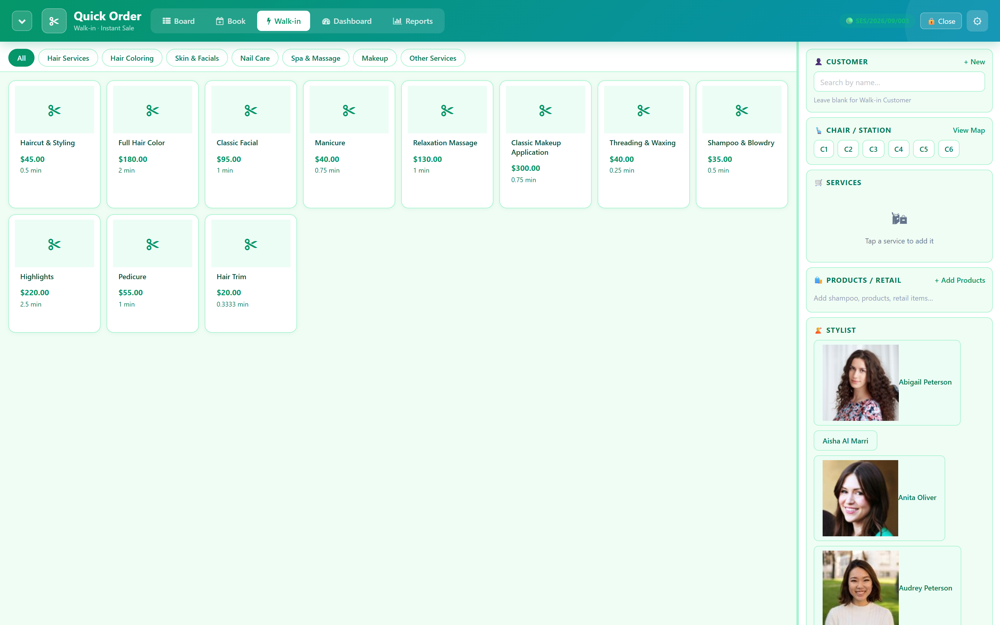
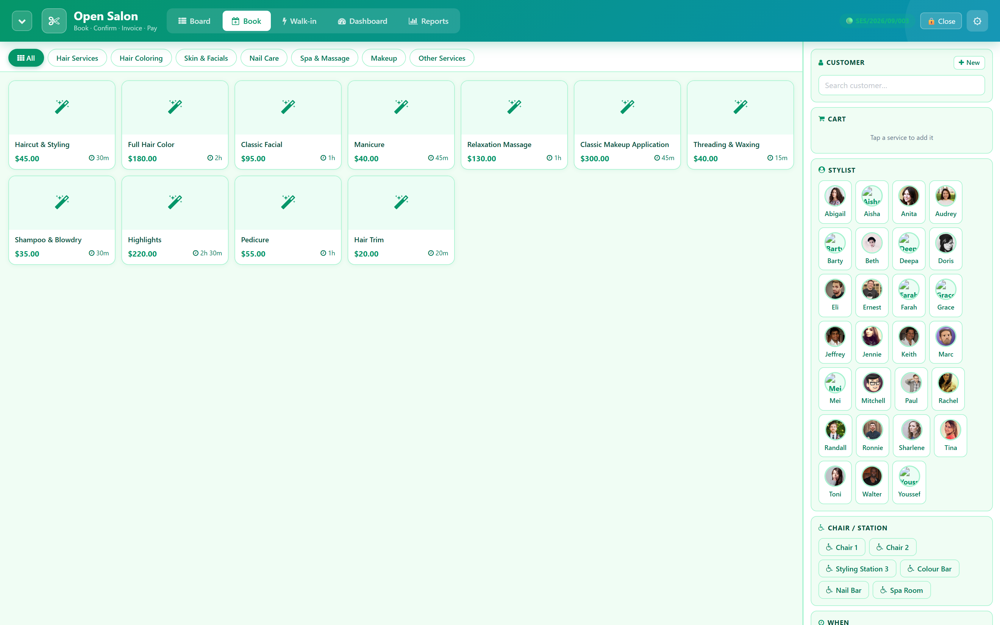
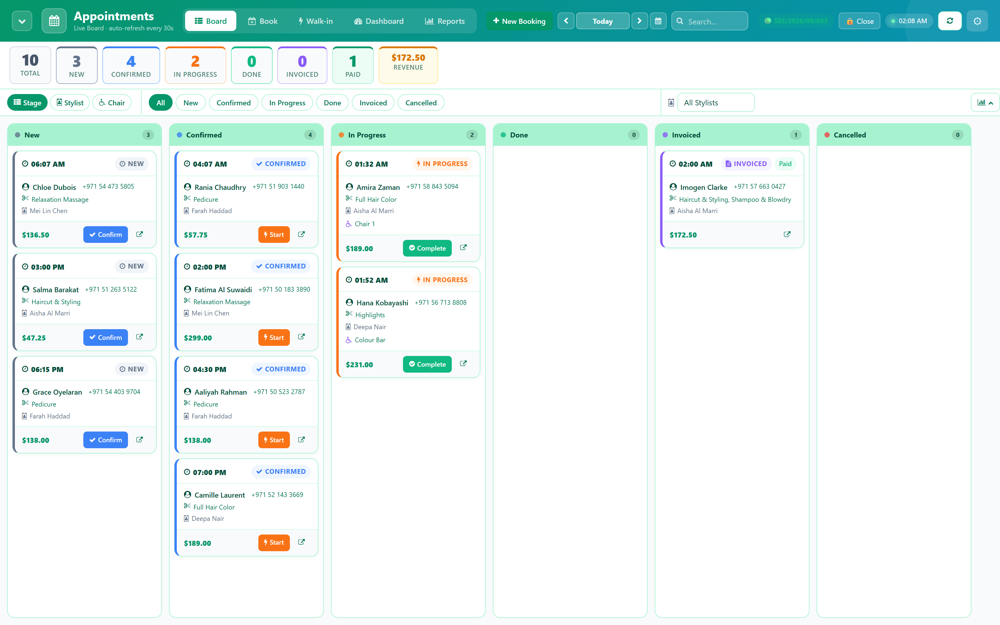
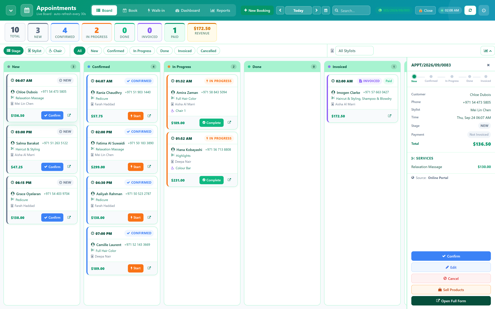
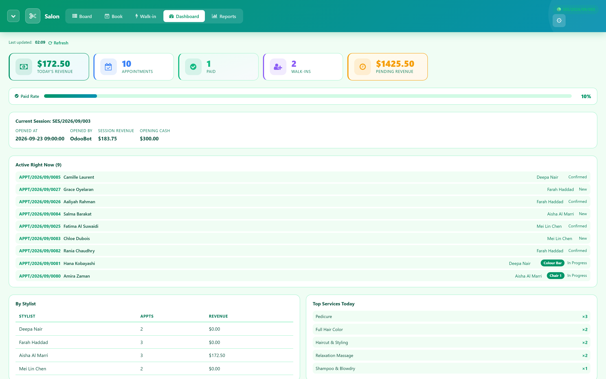
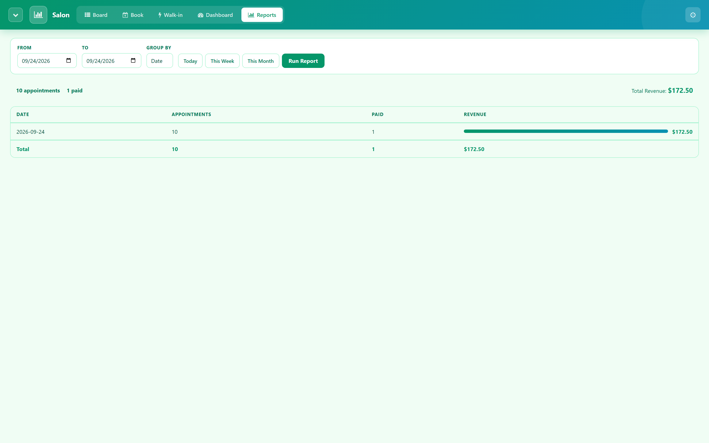
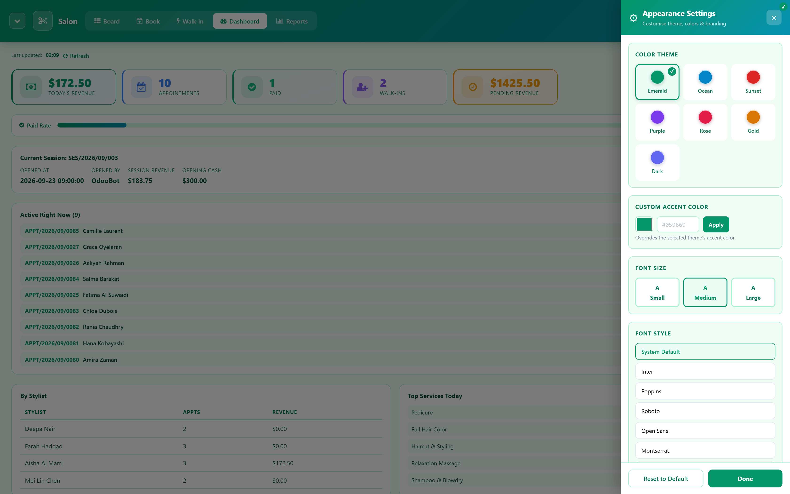
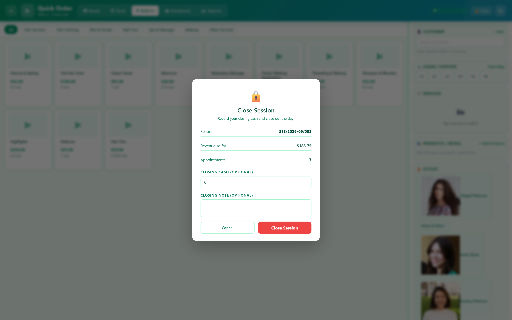

The five words you need
This screen sits on top of WT Salon Management and adds a handful of its own ideas. Once these are clear, every screen makes sense.
Before you start
This module needs WT Salon Management installed, with your service catalogue and staff already set up there. WT Enterprise Salon is optional; install it too if you want loyalty points, gift cards and memberships to appear on the payment screen. Without it the till still works, those three panels are simply empty.
- Install WT Salon Quick Booking from Apps.
- Log in and look for Open Salon in the app grid. If it is missing, ask your administrator for the Stylist, Receptionist or Manager role (section 11).
- Five menu items sit under it: Quick Booking, Appointments, Quick Order, Dashboard and Reports.
Install with demo data on and you get a working example salon, Bloom & Blade Salon, with six staff, six chairs, fifteen customers and a week of bookings already there. Every screenshot in this guide is taken from that database. A production database normally installs without demo data, so your own till opens empty.
Chairs and stations
A chair is added once, by an administrator, with a short code that fits on the floor map, for example C1 or C2, and, optionally, a preferred stylist. From then on its status looks after itself: occupied the moment an active appointment is put on it, available again the instant that appointment is done, invoiced or cancelled.
The module refuses to put a second active appointment on a chair that already has one; the error names the appointment already there, so two customers never land in the same chair by mistake.
Opening the till
- On any of the five screens, if no session is open, press Open Session.
- Enter the Opening Cash counted into the drawer and confirm.
- From this point every quick order and booking is recorded against this session, with running totals updating live.
A stylist cannot open or close a session. See section 11.
Serving a walk-in: Quick Order
- Tap one or more services in the catalogue; each tap adds it to the cart.
- Search for the customer by name or phone, or add a new one on the spot with just a name.
- Pick a chair from the live map if you want one assigned, and a stylist if the service needs one.
- Press Pay. The sale is created, moved straight through to invoiced, and the payment screen opens.

Booking ahead: Quick Booking
- Pick the services, the customer, a stylist and a date and time.
- Apply a discount if needed; it applies to every line on the booking.
- Press Book Appointment. It lands in the New stage and appears on the board tab of the same screen.

The board
Open Open Salon > Appointments for the board on its own, full width, refreshing itself every thirty seconds. A stats row across the top counts total, new, confirmed, in progress, done, invoiced, paid and today's revenue.

Dragging a card straight to Invoiced is blocked. Use Pay from the card or its detail panel instead, so an invoice is never created without going through payment.
Payment, points and gift cards
Click a card, on the board or the Quick Booking board tab, to see its services, stylist, notes and next action. Once it is invoiced, press Pay.

The payment screen shows every service line, the subtotal, tax and total, and the payment journals your company has configured. If WT Enterprise Salon is installed, it also shows the customer's loyalty points, what a redemption is worth, and a field for a gift card code; both are applied as a discount line before the invoice is posted. Pick a journal and confirm: the invoice is posted and the payment is created and reconciled in the same step.
An appointment can still be edited from its detail panel as long as no invoice has been posted. Once posted, editing is blocked and the services on the ticket are final.
Dashboard and reports

Open Open Salon > Reports, available to a manager or receptionist, for a date-range sales report grouped by date, by stylist or by service, each row with count, revenue and how many were paid.

Appearance
Seven colour themes, a dark mode, font size, a custom brand name and logo, and whether a receipt prints automatically after payment. Saved to the device, so a busy front desk and a quiet back counter can each look the way that till prefers.

Closing the till
- Press the lock button in the header.
- Enter the Closing Cash counted in the drawer and confirm.
- The session's final totals, appointments, paid count, walk-ins and revenue, are fixed at that point.

A session cannot be closed a second time. Trying is refused, so a till is never double-counted.
Roles
| Role | Can do |
|---|---|
| Stylist | Quick Order, Quick Booking, the board, the Dashboard. |
| Receptionist | Everything a stylist can do, plus opening and closing a session and reading Reports. |
| Manager | Everything a receptionist can do, plus Appearance Settings and full access to chairs and sessions in the technical views. |
For the administrator
- Install order. WT Salon Management first, with your services and staff. WT Enterprise Salon next, if you want loyalty, gift cards and memberships. This module last.
- Roles. Settings > Users & Companies > Users, and under the Salon Management section of the user's access rights choose Stylist, Receptionist or Manager (section 11).
- Chairs. Add one record per seat, station or room, with a short code, from WT Salon Management's technical settings.
- Payment journals. The payment screen lists whatever Cash and Bank journals are configured under Accounting > Configuration > Journals. Add at least one before opening the till.
What this does not do
- Not a standalone product. It needs WT Salon Management, and WT Enterprise Salon for the loyalty, gift card and membership panels.
- No time-slot scheduling for chairs. A chair's status is whether an appointment is on it right now, not a calendar of the whole day; two appointments cannot share a chair at the same moment, but nothing stops the same chair being assigned to two bookings later in the day.
- No hardware till integration. No cash drawer, card reader or barcode scanner. Payment is recorded against your existing Odoo payment journals.
- No SMS. Confirmation emails come from WT Enterprise Salon's templates if that module is installed; there is no SMS channel.
- No receipt printer driver. The printed receipt is a normal browser print window sized for an 80mm roll.
Common questions
| Question | Answer |
|---|---|
| Do I need WT Enterprise Salon? | No, but the loyalty, gift card and membership panels on the payment screen will be empty without it. Everything else works either way. |
| Can two customers end up on the same chair? | No. Starting or booking a new appointment on a chair that already has an active one is refused, with a message naming the appointment already there. |
| What if I try to close an already-closed session? | It is refused. A session can only be closed once; its final totals do not change after that. |
| Can a stylist open the till? | No. Opening or closing a session, and reading Reports, need the Receptionist or Manager role. |
| The board still shows a chair as free after I used it. | The board refreshes every thirty seconds and the chair map refreshes when its screen loads; give it a moment, or switch screens and back. |
Anything else: write to info@way4tech.com with a screenshot.